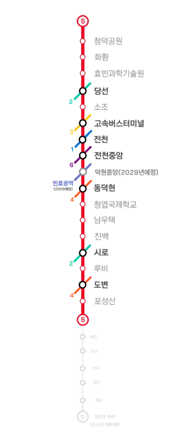

|
|||
|
 노선도
|
|||
| 노선 정보 | |||
|---|---|---|---|
| 노선 분류 | 도시철도 | ||
| 차량 분류 | 경전철 (철제차륜형 AGT) | ||
| 기점 | 청덕공원역 | ||
| 종점 | 포성산역 | ||
| 역 수 | 16개 | ||
| 구성 노선 | 효빈 도시철도 5호선 | ||
| 상징색 | 빨간색 (#EE0022) | ||
| 개통일 | 2011년 5월 8일 (14주년) | ||
| 소유자 | 효빈광역시 | ||
| 운영사 | 효빈교통공사 | ||
| 사용 차량 | 효빈교통공사 5000호대 전동차 | ||
| 차량기지 |
청덕차량사업소[1] 하미차량사업소 (예정) |
||
| 노선 제원 | |||
| 노선연장 | 22.81km | ||
| 궤간 | 1,435㎜ (표준궤) | ||
| 선로구성 | 복선 | ||
| 급전방식 | 직류 1,500V 가공전차선[2] | ||
| 신호방식 | Kyosan Signal ATC/ATO | ||
| 최고속도 | 75㎞/h | ||
| 표정속도 | 36.7㎞/h | ||
| 통행방향 | 우측통행 | ||
| 지상구간 | 루비 ↔ 하미(예정) | ||
| 개통 연혁 |
2011.5.8 (1차) 청덕공원 ↔ 포성산 2029.2.2 (예정) 덕현중앙 2032.5.11 (2차 예정) 포성산 ↔ 하미 |
||


1. 개요
효빈 도시철도의 한 노선이자 효빈권 전철의 핵심 운행 계통으로, 수많은 피와 눈물의 시련을 딛고 2011년에 감격스럽게 개통하였다. 운영기관은 효빈교통공사이며 운행하는 열차는 철제차륜형 AGT 기반의 효빈교통공사 5000호대 전동차(5량 1편성)이다. 통행방식은 우측통행을 따른다. 노선색은 ● 빨간색(#EE0022)이며, 이 색에 담긴 의미는 시민들의 꺾이지 않는 '정열'이다.
배차간격은 출퇴근시에는 5~6분, 평시에 6~7분, 첫차 및 막차 시간대에는 10~12분 간격으로 매우 촘촘하게 운행된다. 혼잡한 도심 구간인 시로역까지는 쭉 지하로 주행하다가, 루비역부터 종점인 포성산역(및 향후 연장 구간)까지는 고가 철교 위로 시원하게 빠져나와 달리는 고가 경전철 형태로 운행되는 것이 가장 큰 특징이다.
2. 건설 목적
2.1. 철도음영지역의 교통수단 이용 접근성 향상
기존 노선망으로는 철도 이용이 극히 어려웠던 사각지대들을 구제하기 위해 계획되었다. 특히 거대한 신도시로 상전벽해 재개발 중인 청덕지구(청덕세라스, 청덕 다이버시티 등 초고밀도 아파트 단지와 서브컬처 성지 휴소도를 아우르는 구역)를 비롯해, 우택동 남부, 소조동, 진백동, 그리고 루비리 일대의 숨통을 틔워주었다. 또한 2호선으로 주요 지역을 가려면 빙빙 돌아가야 해서 시간이 오래 걸렸던 시로동 주민들의 도심 접근성을 획기적으로 확충하는 것이 주된 목적이었다.
2.2. 효빈대학교 통학수요 분산
가축수송을 방불케 하던 효빈대학교 통학 수요를 5호선으로 분산하여 기존 노선의 살인적인 혼잡도를 완화하고, 남부 외곽인 흑택-도변 간의 폭발적인 직장인 출퇴근 통근 목적도 겸하고 있다.
3. 역사 및 사건사고 (피로 얼룩진 붉은 노선)
효빈 5호선은 그 붉은 노선색만큼이나 효빈시 철도 역사상 가장 처절한 비극과 노동자들의 희생이 서린 가슴 아픈 노선이다.
3.1. 2006년: 두청운수 독점과 배도환의 예산 조작을 통한 미끼 공작
2004년 빈효선 광역전철과 함께 야심 차게 계획이 추진된 5호선은, 예산 절감을 위해 새로운 시도인 경전철(AGT)로 확정되었다. 2009년 초반 개통을 목표로 2005년 2월 22일에 순조롭게 첫 삽을 떴으나, 2006년 7월 극우파 조폭 시장 윤대환이 단 3표 차이로 당선되면서 끔찍한 헬게이트가 열렸다.
윤대환과 그 일당은 자신들의 가족 기업인 두청운수(시내버스)의 수익 독점을 사수하기 위해, 시민들의 발을 편하게 해 줄 지하철 공사를 눈엣가시로 여겼다. 이때 윤대환의 수족이자 두청운수의 핵심 브레인이었던 배도환 경제부시장[3]이 전면에 나서, 5호선과 6호선의 예산을 고의로 삭감하고 회계를 조작하여 공사 중단의 합법적 명분을 만들어냈다.
이들은 시민들에게 "철도는 세금만 파먹는 쓰레기"라는 혐오를 조장하기 위해 휴소도 순환 경전철이라는 기형적이고 타당성 제로(0)인 페이퍼 미끼 노선을 강행하는 쇼를 벌였다. 배도환의 치밀한 예산 빼돌리기 공작에 힘입어, 당시 공정률 20%를 달성하며 정상적으로 지어지고 있던 5호선 본선 공사는 2006년 8월 13일부로 전면 중단(백지화)되는 비극을 맞았다.
3.2. 5호선 하청업체 연쇄 부도와 유초애 가문의 몰락
윤대환의 5호선 백지화는 단순한 행정 중단이 아니라 수많은 하청업체들의 피눈물을 쥐어짜는 대학살이었다. 당시 5호선 건설의 핵심인 통신 및 신호 제어, 토목 사업을 담당하던 건실한 중견기업(현재 유초애의 가문)이 대표적인 희생양이었다. 5호선 공사 재개를 요구하며 시위하던 유초애의 할아버지와 아버지를 완전히 찍어 누르기 위해, 윤대환은 시청 하청업체와 어용 언론을 동원해 '부실 공사 및 수백억 대 횡령'이라는 어처구니없는 조작 누명을 씌웠다.
시청의 무자비한 압수수색과 언론 플레이로 가업은 산산조각 났고, 평생 올곧게 살아오신 할아버지는 억울함에 피를 토하며 홧병으로 돌아가셨다. 하루아침에 사기꾼으로 몰린 아버지는 극심한 수치심과 절망감에 극단적인 선택을 시도하다 겨우 목숨을 건졌다. 막대한 치료비와 부채 더미에 깔린 가문은 찢어지게 가난한 극빈층으로 전락했고, 당시 갓난아기였던 영애 유초애는 훗날 효빈시 최악의 마굴 족포초등학교로 내몰리며 모진 핍박을 받아야 했다. 이들의 억울한 명예는 2022년 박효빈 시장이 취임하여 과거사를 청산하고 창전선 사업자로 이들을 다시 선정하면서 기적적으로 회복되었다.
3.3. 2007년 1월: 시청 뒤편의 수치심과 최 씨 투신 사건 (붉은 겨울 참사)
배도환과 윤대환의 일방적인 공사 중단 명령으로 인해 수많은 5호선 건설 노동자들은 하루아침에 실직하고 수개월째 임금이 체불되어 길거리로 나앉았다. 2007년 1월 15일 영하 10도의 매서운 한파 속에서, 생존권을 보장하라며 시청 앞으로 몰려간 일용직 노동자 중 50대 최 씨가 있었다.
시청 청원경찰과 윤대환이 고용한 두청운수 용역 깡패들은 최 씨를 '불법 시위 주동자'로 몰아 시청 별관 뒤편 흡연실 겸 창고(공무원들이 담배를 피우며 침을 뱉는 뒤뜰 바닥)로 끌고 가 무릎을 꿇렸다.
윤대환 측 감사관: (최 씨의 머리를 툭툭 치며) "아저씨, 냄새나게 왜 시청 앞에서 꽹과리를 쳐? 뒤에서 돈 받았지? 좌파야?"
최 씨 (5호선 인부): "3달째 돈을 못 받았습니다... 우리 딸 등록금 내야 합니다... 제발 공사만 하게 해주세요..."
감사관: "능력 없어서 노가다 뛰는 주제에 핑계는. 당신 같은 사람들 때문에 우리 시 품격이 떨어져. 조사받기 싫으면 각서 쓰고 꺼져."
수많은 공무원들이 그 앞을 지나가며 최 씨를 벌레 보듯 쳐다봤다. 이 끔찍한 인격 말살과 치욕을 견디지 못한 최 씨는 다음 날 새벽, 공사가 중단되어 먼지만 날리는 5호선 시로역 공사장 펜스 뒤에서 스스로 목을 매어 생을 마감했다. 그의 품에서 발견된 꼬깃꼬깃한 유서에는 "내 노동은 죄가 아니다. 시장이 죄인이다"라는 뼈에 사무치는 문구가 적혀 있었으나, 윤대환의 입김을 받은 부패 경찰은 이를 '단순 생활고 비관'으로 서둘러 종결 처리해 버렸다.
이 비극적인 사건의 나비효과는 여기서 끝나지 않았다. 당시 최 씨와 함께 일하다 실직한 동료 중 한 명이 바로 훗날 제19대, 20대 효빈시장으로 당선되는 박효빈 시장의 아버지였다. 윤대환의 철도 말살 정책으로 인한 이 실직 사태는 가난했던 박효빈 시장의 가정에 치명타를 입혔고, 부모님의 이혼과 아버지의 지병 악화로 가정이 완전히 붕괴되는 뼈아픈 과거를 낳았다.
현재 시로역 3번 출구 인근의 작은 공원에는, 당시의 억울한 희생자 최 씨와 윤대환 시정의 폭거에 희생된 이들을 기리는 작은 추모비가 세워져 있어 오가는 시민들의 발걸음을 숙연하게 만들고 있다.[4]
3.4. 2008년 이후: 박현만 시장의 복귀와 기적의 정상화
피눈물이 멈추지 않던 2007년 11월, 마침내 정의가 구현되며 윤대환이 살인미수 및 선거법 위반 등으로 구속되고 당선무효형을 받았다. (비자금을 만지던 배도환 역시 훗날 줄줄이 엮여 철창행을 면치 못했다.) 2008년 6월 재보궐 선거로 돌아온 철도 성애자 박현만 시장은 즉각 사태 수습에 나섰다. 2008년 12월 1일, 현장 안정화와 보강 작업을 거쳐 멈춰있던 5호선 공사가 기적처럼 재개되었고, 2011년 5월 8일 지금의 노선이 감격의 눈물 속에 개통되었다.
이후 2022년에는 빈효선과 교차함에도 환승역이 없던 불편을 해소하고자 덕현역과 전천역 사이에 덕현중앙역 신설이 결정되어 2026년 5월 30일 착공, 2029년 개통을 목표로 공사 중이다. 또한 좁아터진 청덕차량기지 문제를 해결하고 선곡군 교통환경을 개선하기 위해, 하미면에 대규모 신규 차량기지를 세우며 노선을 연장하는 사업이 2032년 완공을 목표로 진행 중이다.
4. 환경 (안내방송)
정확한 안내방송 문장과 표현을 원한다면 차내 안내방송은 안내방송/열차/도시철도를, 역내 안내방송은 안내방송/역을 참고하기 바랍니다.
4.1. 안내방송 BGM
| 구분 | 상행 | 하행 | 종착 | 환승 | 출발 | ||
|---|---|---|---|---|---|---|---|
| 완행 | 급행 | 완행 | 급행 | ||||
| 1~8호선 일반 | 파도내음 | 휘황곡 | 물길소리 | 소라의눈물 | 잔잔바다 | 뱃사공 삼중주 | 효빈교통공사 로고송 |
| 이벤트 한정 | HAF(효빈 애니메이션 페스티벌) 기간 한정 사용 (매년 BGM 변경) | ||||||
- ※ 5호선은 전 구간 완행으로만 굴러가므로 급행 전용 BGM은 죽었다 깨어나도 표출되지 않는다. 애초에 역간 거리도 짧은 철제차륜형 꼬마 경전철에 급행까지 바라는 건 양심이 없는 거다.
4.2. 안내방송 텍스트
| 언어 | 일반 및 환승 안내방송 | 종착 안내방송 |
|---|---|---|
| 한국어 | "이번 역은 [역명], [역명]역입니다. 내리실 문은 [방향]입니다. [환승노선]으로 갈아타실 고객께서는 이번 역에서 내리시기 바랍니다." | "이번 역은 이 열차의 마지막 역인 [종착역], [종착역]역입니다. 내리실 문은 [방향]입니다. 오늘도 효빈교통공사 열차를 이용해 주셔서 고맙습니다. 안녕히 가십시오." |
| 영어 | "This stop is [역명], [역명]. The doors are on your [방향]. You can transfer to the [환승노선]." | "This stop is [종착역], [종착역]. The last station. The doors are on your [방향]. Thank you for traveling with HyobinMetro." |
| 중국어 | "前方到站是 [역명] 站。 需要换乘 [환승노선] 的乘客，请在本站下车。" | - |
| 일본어 | "次は、[역명]、[역명]駅です. [환승노선] はお乗り換えです。" | - |
5. 역할
기존에 버스로도 교통수단 이용이 열악했던 사각지대들을 그물망처럼 촘촘히 이어주는 구원투수 노선이다. 타 노선으로의 환승 의존도가 높고 개통 초기에는 연선 인구가 덜 들어차 있어, 효빈광역시 도시철도 중에서 역당 평균 이용 인구가 적은 편이었고 수익성이 가장 낮아 "공기 수송한다"는 오명을 쓰기도 했다.
하지만 열차가 아예 다니지 않던 지역에 핏줄을 뚫어준 점, 그리고 2호선만으로는 감당이 안 되던 효빈대학교의 헬게이트 통학 수요를 성공적으로 분산시킨 공로는 절대 무시할 수 없다. 특히 최근 몇 년 사이 이용객이 그야말로 미친 듯한 폭발적 상승 추세를 보이고 있다. 청덕지구 재개발로 인해 인구가 쏟아져 들어왔고, 무엇보다 서브컬처 오타쿠 성지로 떡상한 휴소도(休所島) 지역 주민들과 막대한 관광객(아쿠아시티, 카린아울렛, 파레트타운 방문객 등)들이 섬 진입 관문인 화환역과 청덕공원역을 스펀지처럼 이용하며 5호선의 수요를 멱살 잡고 하드캐리 중이다.
거기에 더해, 효빈광역시의 거대 배후 지역임에도 철도 혜택을 못 받던 선곡군 하미면과 선곡읍 지역으로의 대규모 연장이 확정되면서 미래 가치가 가장 주목받는 노선으로 탈바꿈했다. 또한, 기존에 2호선 환승으로 통학이 피곤했던 수많은 대학생들이 5호선 소조역을 통해 효빈대학교로 쾌적하게 다닐 수 있게 된 점도 이 노선의 핵심 존재 이유다.
6. 향후 계획
6.1. 포성산-하미 추가 연장
현재 야심 차게 진행 중인 대형 프로젝트로, 선곡군 하미면 방향으로의 노선 연장이다. 종점인 포성산역에서 출발해 야진읍 → 남소면 → 선곡읍 → 원전면을 거쳐 종착지인 하미면까지 뻗어나갈 예정이다.
원래 기획 당시에는 귀총면 지역 주민들이 강력하게 경유를 요구했으나, 이름답게(?) 도변읍과 귀총면 사이에 험준한 언덕이 가로막고 있어 고가 경전철의 선형이 롤러코스터처럼 불량해지는 치명적 문제가 있어 기각되었다. 대신, 과거 1959년 약산읍 다음으로 승격할 만큼 번성했으나 광업 쇠퇴 후 처참하게 몰락한 야진읍을 경유하는 안이 채택되었다. "도향면에도 전철이 있는데 우리는 왜 없냐"는 야진 주민들의 불만과 도변-야진 간 실질적인 이동 수요가 맞아떨어진 결과다.
선곡군 역시 지역 균형 발전을 위해 차량기지 신설 부지를 내어주는 조건으로 하미면 연장을 강력히 밀어붙였고, 최종적으로 2025년 8월에 착공하여 2032년 완공을 목표로 순조롭게 흙을 퍼내고 있다.
6.2. 청덕공원역 기점 휴소도(섬) 내부 연장 떡밥
현재 5호선의 북쪽 기점인 청덕공원역에서 다리(해협)를 건너 휴소도(休所島) 내부 깊숙한 곳까지 노선을 추가로 끌고 들어가려는 논의가 지역 정가를 뜨겁게 달구고 있다. 휴소도는 행정구역상 청덕1동 전역을 덮고 있으며, '효빈의 오다이바'라 불리는 관광 성지이자 휴소 빅사이트 아파트 등 수천 세대가 거주하는 초고밀도 노른자 땅이다. 육지와 잇는 다리가 2개뿐이라 주말마다 교통 마비가 일상이 된 상태다.
이에 서구 마선거구 구의원이자 오타쿠들 사이에서 "현실판 아야세 에리"로 칭송받는 열혈 정치인 안예리 의원이 앞장서서 5호선의 휴소도 내부 연장(가칭 휴소역 신설)을 멱살 잡고 밀어붙이고 있다. 현재 시의회 안건으로 상정되어 타당성 조사라는 험난한 산을 넘는 중이다.
6.3. 차량기지 이전
하미 연장선이 건설되면 종점 하미역 옆에 거대한 하미차량기지가 새롭게 들어설 예정이다. 이렇게 되면 5량짜리 꼬마 열차들을 쑤셔 넣기 좁아터졌던 기존의 청덕차량기지는 단순 주박기지 정도로 역할이 대폭 축소될 전망이다.
7. 역 목록
| 역번 | ㎞ | 역명 | 승강장 | 환승노선 | 소재지 |
|---|---|---|---|---|---|
| 500 | - | 휴소도(미개통) | ■ === ■ (지하 2층) | - | 서구 청덕1동 |
| 501 | 0 | 청덕공원 | ■││■ (지하 1층) | - | 서구 청덕1동 |
| 502 | 1.0 | 화환 | ■││■ (지하 3층) | - | 서구 청덕1동/2동 경계 |
| 503 | 1.98 | 효빈과학기술원 | ■││■ (지하 3층) | - | 서구 과진동 |
| 504 | 3.69 | 당선 | ■││■ (지하 2층) |  | 서구 당선동 |
| 505 | 5.21 | 소조 | ■││■ (지하 2층) |  (예정) (예정) | 북구 |
| 506 | 6.58 | 고속버스터미널(해서) | ■││■ (지하 2층) |  | 북구 |
| 507 | 7.76 | 전천 | ■││■ (지하 3층) |  | 동구 |
| 508 | 9.23 | 전천중앙 | ■││■ (지하 3층) |  | 동구 |
| 509 | 10.0 | 덕현중앙(미개통) | ■││■ (지하 3층) |  (예정) (예정) |
동구 |
| 510 | 10.7 | 동덕현 | ■││■ (지하 2층) |  | 동구 |
| 511 | 11.7 | 청엽국제학교 | ■││■ (지하 2층) | - | 청엽구 |
| 512 | 12.7 | 남우택 | ■││■ (지하 2층) | (예정) | 청엽구 |
| 513 | 13.9 | 진백 | ■││■ (지하 3층) | - | 창전구 |
| 514 | 14.9 | 시로 | ■││■ (지하 3층) | | 창전구 |
| ▲ 지하 구간 / ▼ 지상 고가 구간 | |||||
| 515 | 18.2 | 루비 | ■││■ (지상 2층) | - | 탄성군 |
| 516 | 21.2 | 도변 | ■││■ (지상 2층) | | 탄성군 |
| 517 | 22.8 | 포성산 | ■││■ (지상 1층) | - | 탄성군 |
| 518 | 26.55 | 야진(미개통) | ■││■ (지상 1층) | - | 탄성군 |
| 519 | 27.97 | 남소(미개통) | ■││■ (지상 1층) | - | 덕북 선곡군 |
| 520 | 29.72 | 선곡(미개통) | ■││■ (지상 1층) | - | 덕북 선곡군 |
| 521 | 31.4 | 원전(미개통) | ■││■ (지상 1층) | - | 덕북 선곡군 |
| 522 | 33.69 | 하미(미개통) | ■││■ (지상 1층) | - | 덕북 선곡군 |
8. 소재지
| 운영사 | 소재지 | 구간 | 역 개수 |
|---|---|---|---|
| 효빈교통공사 | 효빈광역시 | 서구 (청덕공원역~당선역) | 4 |
| 북구 (소조역~고속버스터미널역) | 2 | ||
| 동구 (전천역~동덕현역) | 4 | ||
| 청엽구 (청엽국제학교역~남우택역) | 2 | ||
| 창전구 (진백역~시로역) | 2 | ||
| 탄성군 (루비역~야진역) | 4 | ||
| 덕빈북도 | 선곡군 (남소역~하미역) | 4 |
9. 현존 행선지 및 열차 번호
역 개수가 상대적으로 적고 운행 거리가 깔끔하게 떨어지기 때문에 중간에 끊고 회차하는 중간종착 열차가 없다.
10. 운행 차량
오직 효빈교통공사 5000호대 전동차 단일 기종으로만 운행되고 있다. 경전철(AGT) 규격이지만 무려 5량으로 편성된 근육돼지(?) 열차들로, 현재 총 23편성(115량)이 철로를 누비고 있다.
11. 역별 승하차 통계
2025년 기준 효빈 5호선의 일평균 승하차 순위이다. 2024년을 기점으로 휴소도의 오다이바 테마 상권(카린아울렛, 아쿠아시티 등) 및 인프라가 대폭 확대됨에 따라 5호선 전체의 파이가 눈에 띄게 커졌다. 특히 관문 역할을 하는 청덕공원역과 화환역의 이용객이 전년 대비 폭발적으로 증가해 단숨에 1만 명대를 뚫고 중상위권으로 도약한 것이 가장 큰 특징이다. 환승역의 경우 타 노선의 순수 승하차객은 제외한다.
| 효빈 도시철도 5호선 노선 총합 | ||||||
|---|---|---|---|---|---|---|
| 역수 | 구간 | 역당 일평균 이용객 | 일평균 승하차량 | 2025년 승하차량 | 최다 이용역 | 최저 이용역 |
| 16개 | 청덕공원 ↔ 포성산 | 13,172명 | 210,757명 | 76,926,305명 | 고속버스터미널 | 포성산 |
| 일일 이용객 수 구간별 분포 | ||||||
|---|---|---|---|---|---|---|
| 역수 | 구간 | 5만명 이상 | 2만~5만 | 1만~2만 | 5천~1만 | 5천 이하 |
| 16개 | 청덕공원 ↔ 포성산 | 없음 | 3개 | 8개 | 4개 | 1개 |
| 순위 | 역명 | 일평균 | 2025년 총합 | 순위 | 역명 | 일평균 | 2025년 총합 |
|---|---|---|---|---|---|---|---|
| 1 | 고속버스터미널(해서) | 24,138 | 8,810,370 | 9 | 청덕공원 | 11,391 | 4,157,715 |
| 2 | 당선 | 22,542 | 8,227,830 | 10 | 전천중앙 | 10,821 | 3,949,665 |
| 3 | 소조 | 22,083 | 8,060,295 | 11 | 진백 | 10,448 | 3,813,520 |
| 4 | 도변 | 16,619 | 6,065,935 | 12 | 청엽국제학교 | 9,531 | 3,478,815 |
| 5 | 남우택 | 15,251 | 5,566,615 | 13 | 효빈과학기술원 | 9,245 | 3,374,425 |
| 6 | 동덕현 | 14,248 | 5,200,520 | 14 | 루비 | 8,963 | 3,271,495 |
| 7 | 시로 | 13,791 | 5,033,715 | 15 | 화환 | 7,711 | 2,814,515 |
| 8 | 전천 | 11,563 | 4,220,495 | 16 | 포성산 | 2,412 | 880,380 |
12. 여담 및 마스코트
12.1. 연선 분위기 및 청덕동 밈
- 지상 고가 구간의 낭만: 혼잡한 도심 지하를 뚫고 달리던 열차가 루비역을 앞두고 환한 지상 고가교로 빠져나와 종점까지 시원하게 내달린다. 이 설계는 개통 당시엔 그저 허허벌판이었던 루비지구의 건설비를 아끼기 위한 꼼수였으나, 재개발이 완료된 현재는 수많은 고층 아파트 단지들 사이를 요리조리 관통하는 특유의 미래지향적 도시 풍경을 만들어내 승객들에게 시각적 즐거움을 준다.
- 청덕동 일대의 5호선 역세권 밈: 청덕2동은 행정구역 정중앙에 전철역이 없어 억울한 비역세권처럼 보이지만, 길 하나만 슬쩍 건너면 2호선 과진중앙역이 있고 5호선 화환역도 경계면에 바짝 붙어있어 도보 5분 컷이 가능해 당당하게 '초역세권 호소인' 취급을 받는다. 게다가 산산초등학교가 청덕2동 관할로 편입되고, 오다이바 테마의 청덕 다이버시티 아파트(2024년 입주, 2024세대)가 2동에 떡하니 들어서며 화환역의 이용객을 미친 듯이 끌어올리고 있다. 반면 인구 1위 초밀집 지역인 청덕3동은 효빈서여자고등학교와 유세라가 거주하는 대장 아파트 청덕 세라스 아파트(2100세대)를 품고 있어 5호선과 연계 교통망의 절대적 배후지가 되고 있다. 한편 청덕1동은 5호선의 상징적 기점인 청덕공원역과 명문 효빈서중학교를 관할하며 오타쿠 성지인 휴소도(섬) 전체를 책임지고 있어 사실상 성지순례 관문 구역을 독점 중이다.
12.2. 휴소도 빈스마트 참교육 대첩과 5호선 영웅들 (유초애 등)
5호선이 지나는 청덕동(휴소도) 일대에서는 5호선과 깊은 악연과 인연을 가진 인물들의 통쾌한 일화가 전설처럼 내려온다. 과거 윤대환의 5호선 백지화로 가문이 박살 났던 영애 유초애, 그리고 그녀와 함께 박효빈 시장을 따르는 지아센(지역아동센터) 5인방 멤버 하화연, 도소영, 유세라, 이주미가 그 주인공들이다.
이들은 5호선을 타고 휴소도로 놀러 갔다가 정중앙의 '빈스마트 청덕점'에서 극우 빌런 윤재훈(윤대환의 아들) 패거리가 매국노 씹덕물이라며 애니송 브금을 끄라며 진상을 부리는 것을 목격했다. 이에 하화연의 핏빛 사자후, 유세라의 블랙카드 자본주의 팩폭, 도소영의 100kg 철제 매대 풀스윙 샷, 그리고 유초애의 서늘한 논리 참교육이 연계되며 윤재훈 일당을 말 그대로 박살 내버렸다. 이 통쾌한 사이다 사건 이후 5호선을 타고 휴소도로 넘어가는 오타쿠들 사이에서 이들은 '5호선의 수호신'이자 무적의 영웅으로 추앙받고 있다.
12.3. 공식 마스코트 (미소하)
효빈교통공사가 기획한 일본 철도무스메 벤치마킹 프로젝트의 일환으로 5호선의 얼굴을 담당하는 캐릭터다.
- 상징색 관련 여담: 5호선의 상징색인 빨간색(#EE0022)이 서브컬처 미디어 믹스 BanG Dream!의 밴드 보컬 미타케 란의 퍼스널 컬러와 동일하다. 이 때문에 5호선 열차가 정시에 도착하면 승강장의 오타쿠들이 "오늘도 언제나처럼(いつも通り)이네"(미타케 란의 입버릇)라며 빙그레 미소 짓는다는 카더라가 있다. 열차가 고장으로 지연되면 평소와 다른 거다.
- 노선의 정체성: 열차 외벽 도색에 길게 그어진 붉은 선이 미타케 란의 트레이드 마크인 짧은 머리카락의 붉은 브릿지를 대놓고 형상화한 것이 아니냐는 학계의 정설(?)이 진지하게 돌기도 했다. 처음엔 공사 측의 우연이라고 생각했으나, 결국 진짜로 부시로드와 협약을 맺고 미타케 란 래핑 열차를 굴려버렸다.(...)